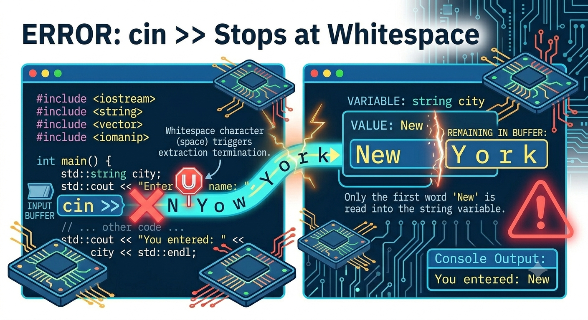
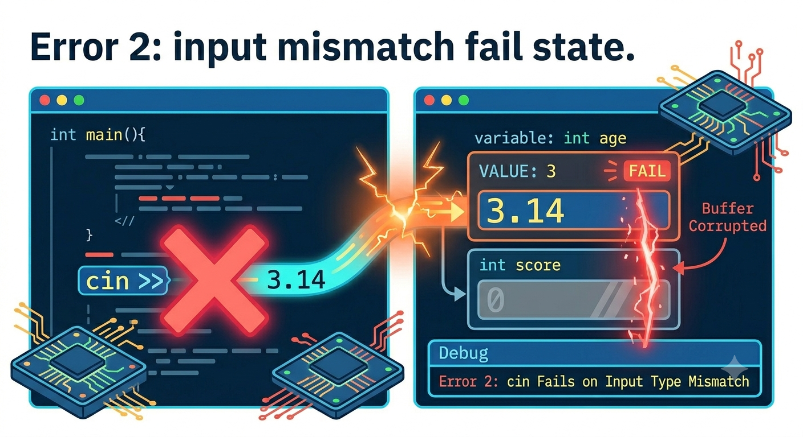

C++
cin is predictable, but we need to know what it consumes and what it leaves behind.cin >> stops when it reaches whitespace.cin fails when the input does not match the receiving variable’s type.These are different problems with different fixes.
cin >> reads one token at a time.
If the user types Maya Chen, only Maya is stored.

getline(cin, variable) reads through the end of the line.
Use getline when spaces are part of the input.
cin >> often leaves the newline character behind.
The getline may read the leftover newline instead of waiting for a name.
Use cin.ignore() after cin >> when the next read is getline.
The ignored newline is removed before the full-line read.
If the user types text when the program expects a number, extraction fails.
Typing ten does not produce an integer.

After a failed read, clear the failure and remove the bad input.
clear resets the stream state; ignore discards the leftover characters.
cin >> for one-word or one-number input.getline when spaces are meaningful.cin >>.cin into a failed state.Date and time functions let a program ask the computer for the current moment.
This is useful for timestamps, elapsed time, and seeding random numbers.
time(0) returns the current time as a numeric timestamp.
Example output:
#include <iostream>
#include <ctime>
#include <iomanip>
using namespace std;
int main() {
time_t now = time(0);
tm* date = localtime(&now);
int month = date->tm_mon + 1;
int day = date->tm_mday;
int year = (date->tm_year + 1900) % 100;
cout << setfill('0');
cout << setw(2) << month << "/";
cout << setw(2) << day << "/";
cout << setw(2) << year << endl;
return 0;
}| Member | Type | Meaning | Range |
|---|---|---|---|
tm_sec |
int |
seconds after the minute | 0-60* |
tm_min |
int |
minutes after the hour | 0-59 |
tm_hour |
int |
hours since midnight | 0-23 |
tm_mday |
int |
day of the month | 1-31 |
tm_mon |
int |
months since January | 0-11 |
tm_year |
int |
years since 1900 | |
tm_wday |
int |
days since Sunday | 0-6 |
tm_yday |
int |
days since January 1 | 0-365 |
tm_isdst |
int |
Daylight Saving Time flag |
The timestamp is useful even before we format it as a human-readable date.
Random numbers let a program choose from several possible values.
They are useful for games, simulations, sampling, and practice programs.
rand() follows a repeatable sequence.
The seed chooses where that sequence starts.
The same seed produces the same sequence.
Use the current time as a changing seed.
Seed once near the beginning of the program.
rand() returns a large integer.
The raw value is usually too large for the program’s actual need.
Use modulus to reduce the raw value to a smaller range.
This produces values from 1 through 6.
Example output:
rand.An IPO model names the three major parts of a program.
Inputs are the values the program needs before it can do useful work.
They may come from the user, a file, a constant, or a system function.
Processing is the calculation, decision, or transformation applied to the input.
This is where the program changes data into a useful result.
Outputs are the values, messages, or reports the program produces.
Good outputs answer the problem the program was written to solve.
| Input | Processing | Output |
|---|---|---|
| quantity, price | total = quantity * price | total price |
The table turns a word problem into a program plan.
Inputs often become variables; processing becomes statements; output becomes cout.
| Input | Processing | Output |
|---|---|---|
| current system time | store timestamp | printed timestamp |
The program does not ask the user for the time; it asks the system.
The input comes from time(0), the variable stores it, and cout displays it.
| Input | Processing | Output |
|---|---|---|
| seed, raw random value | raw % 6 + 1 | die roll |
The processing step turns a large raw value into the range the program needs.
Separating raw and roll makes the design easier to trace.
An execution trace is a table or notes showing program state after each statement runs.
It slows the program down enough for humans to inspect it.
Useful trace columns include:
Only update the values that change on that line.
| Line | a | b | total |
|---|---|---|---|
| 1 | 4 | ||
| 2 | 4 | 6 | |
| 3 | 4 | 6 | 10 |
When cout runs, record exactly what appears.
| Statement | total | Output |
|---|---|---|
cout << total; |
10 | 10 |
Output is part of the program’s observable behavior.
When cin runs, choose an assumed user input and record the stored value.
| User types | Statement | age |
|---|---|---|
19 |
cin >> age; |
19 |
The trace depends on the input you assume.
| Statement | now | Output |
|---|---|---|
now = time(0); |
1780594200 | |
cout << now; |
1780594200 | 1780594200 |
The exact timestamp changes, but the trace pattern stays the same.
| Statement | raw | roll | Output |
|---|---|---|---|
raw = rand(); |
41 | ||
roll = raw % 6 + 1; |
41 | 6 | |
cout << roll; |
41 | 6 | 6 |
Tracing separates the raw value from the final bounded value.
An output display still starts with IPO.
| Input | Processing | Output |
|---|---|---|
| labels, values | choose scale and spacing | chart or table |
The chart is planned before it is printed.
A terminal bar chart uses repeated characters to represent quantity.
The longer bar represents the larger value.
Start with one correct row before building a larger display.
Each row follows the same output pattern.
Tables are charts when their layout helps the reader compare values.
Alignment turns separate lines into one display.
The table gives exact values; the bars make comparison fast.
cin >> stops at whitespace; getline reads a whole line.cin >> for simple single-token values.getline when spaces are part of the input.cin >> to read a full name.cin >> and getline without handling the leftover newline.getline.cin >>, then read a full address with getline.cin >> read.cin >> stop at spaces?raw, roll, and now.srand(time(0)) repeatedly before every random number.+ 1 when the desired range starts at 1.| Problem | Input | Processing | Output |
|---|---|---|---|
| rectangle area | length, width | length * width | area |
| greeting | name | combine text and name | message |
cout statement runs.Trace x, y, and output after each statement.
Each # can represent one item, five items, or another stated unit.
CISP 400 · Fowler